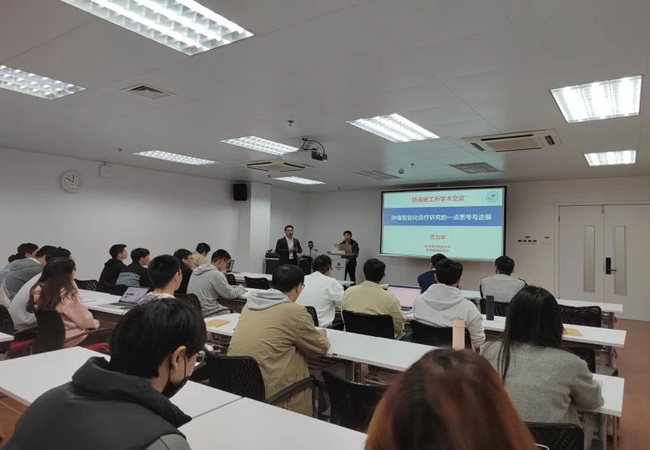
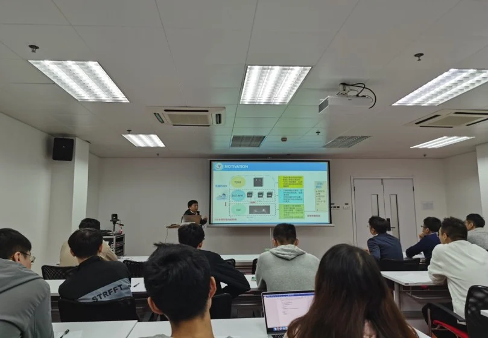
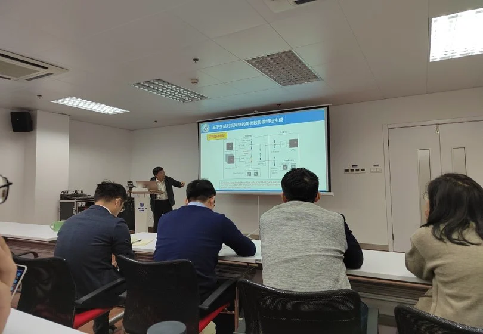
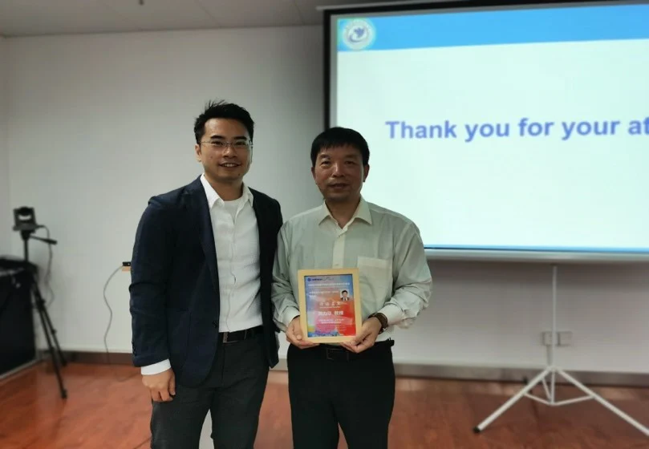

医学图像/眼科影像专题学术分享会
---- IMED第五十一讲
邀请嘉宾：厉力华 教授
报告题目：肿瘤智能化诊疗研究的一点思考与进展
天灰灰，阴雨霏霏。十一月的雨带着十足的清爽夹杂着一丝丝凉意向慈溪医工所的园区飘洒着。在这个干净清爽的日子里，宁波iMED的老师和同学们怀着激动的心情邀请到了杭州电子科技大学智慧研究院院长厉力华教授。厉教授同时也是国家杰出青年科学基金获得者。浙江省科技发展咨询委员会委员、之江实验室学术咨询委员会委员等。
初识厉教授，一张和善的面孔带着质朴的微笑，衣着简单但庄重，只站在讲台上便给人一种科学家庄重的感觉，面带微笑却有一种不怒而威的气质，让人肃然起敬。iMED赵一天老师主持了此次交流会，亲切的向同学们介绍了厉教授，厉教授向大家分享了名为《肿瘤智能化诊疗研究的一点思考和进展》的报告，报告以肿瘤精准诊断为背景，从信息视角出发，围绕肿瘤异质性多尺度解析与智能化诊疗问题，从科学和临床问题两个层次、以及智能技术方法和生物医学意义解释两个方面展开。厉教授指出科学的研究应该从临床需求出发，以需求推动科技革新，真正做到研究应用于临床，服务于临床。同时，厉教授分享了自己在肿瘤智能化诊疗方面的工作，提出了很多自己的独到见解，比如模型问题中的可解释性问题，厉教授提出应注重对影响特征的生物学结构进行深入解释。
厉教授报告结束后，同学们积极的向厉教授请教，张炯老师、马煜辉和郝晋奎博士都提出了自己的疑问，厉教授依次进行全面独到的回答。最后，赵一天老师和厉教授就医学图像获取困难以及数据质量差异大的问题进行了讨论，赵老师和厉教授都发表了自己对这个问题的看法。此次报告会圆满完成，同学们全都受益匪浅。



